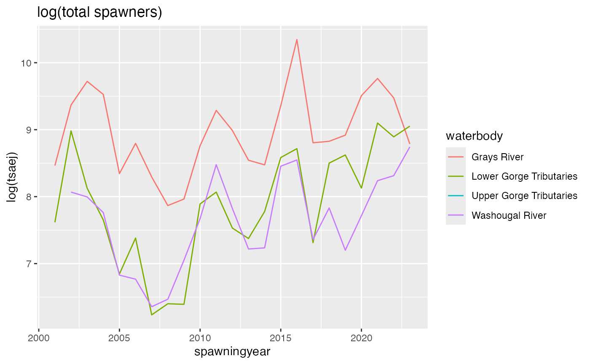

See the Getting Started vignette for instructions on installing {rCAX}. Once you have installed {rCAX}, you can begin using the package by loading the library.
Load the library.
library(rCAX)
#> Access and use of data in the CAX databases requires acceptance of the terms of use: rcax_termsofuse().Read the terms of use:
rcax_termsofuse()The main user function is rcax_hli() which returns HLI
tables from Coordinated Assessments data eXchange with extra meta data
such as NMFS_PopID as returned from the CAP Fish HLIs Tabular
Query.
The basic rcax_hli() functionality is shown with the
NOSA HLI but the syntax is the same for all the HLI:
Get the table and show all the column names with definitions. Only first 10 are shown.
head(rcax_hli("NOSA", type="colnames"))
#> name
#> 107 age10prop
#> 41 age10proplowerlimit
#> 24 age10propupperlimit
#> 108 age11plusprop
#> 109 age11plusproplowerlimit
#> 62 age11pluspropupperlimit
#> definition
#> 107 The proportion of natural origin fish that were age 10 (brood year +10).
#> 41 Lower limit of the confidence interval for Age10Prop.
#> 24 Upper limit of the confidence interval for Age10Prop.
#> 108 The proportion of natural origin fish that were age 11 (brood year +11) or older.
#> 109 Lower limit of the confidence interval for Age11PlusProp.
#> 62 Upper limit of the confidence interval for Age11PlusProp.Here the columns returned are restricted by cols. The
table is filtered with flist to be just the columns with
nmfs_popid equal to 7. Note the cols argument
is case insensitive, NMFS_PopID and nmfs_popid
are the same, but the column names in the returned tables will all be
lower case.
tab <- rcax_hli("NOSA",
flist = list(nmfs_popid = 7),
cols=c("NMFS_PopID", "spawningyear", "tsaej", "nosaej"))
head(tab)
#> nmfs_popid spawningyear tsaej nosaej
#> 1 7 1964 3020
#> 2 7 1965 2539
#> 3 7 1966 2984
#> 4 7 1967 3182
#> 5 7 1968 3594
#> 6 7 1969 2973Return data for a single ESU. The ESU/DPS names must be exact and are
case sensitive. Use rCAX:::caxesu to see the ESU/DPS
names.
We can then plot:
library(ggplot2)
# Convert tsaej to a number
tab$tsaej <- as.numeric(tab$tsaej)
# plot
ggplot(
subset(tab, spawningyear>2000),
aes(x=spawningyear, y=log(tsaej), color=waterbody)) +
geom_line(na.rm = TRUE) +
ggtitle("log(total spawners)")
Keep in mind that not all ESU and DPS are in the CAX database for each HLI. Go to https://www.streamnet.org/data/hli/ to do a search to quickly see what is available in different HLI tables.
The flist argument is a list with the columns and values
you want to filter on. Here are some examples:
Filter based on one value.
f <- list(esu_dps = "Steelhead (Middle Columbia River DPS)")
f <- list(popid = 7)Filter based on multiple values. In this case, data with popid 7, 8 or 9 are returned.
flist = list(popid = c(7,8,9))Filter based on two columns. Here we getting the the summer run data
for one ESU. The values in flist are not case sensitive so
“Summer” will return both “Summer” and “summer”.
flist = list(esu_dps = "Salmon, Chinook (Snake River spring/summer-run ESU)", run = c("Summer"))Unfortunately there seems to be a server-side problem with passing in multiple values with multiple columns. This works
flist = list(run = c("Summer", "Spring"))But this throws an error.
flist = list(esu_dps = "Salmon, Chinook (Snake River spring/summer-run ESU)", run = c("Summer", "Spring"))The default maximum number of records is 1000. You can increase (or decrease) this by passing in the limit query parameter.
tab <- rcax_hli("NOSA",
qlist = list(limit=1),
cols=c("popid", "spawningyear", "tsaej"))
tab
#> popid spawningyear tsaej
#> 1 58 2001Increase the limit to 2000 to ensure all the data are returned. Not run.
tab <- rcax_hli("NOSA",
flist = list(esu_dps="Salmon, Chinook (Snake River spring/summer-run ESU)")
qlist = list(limit=2000),
cols=c("popid", "spawningyear", "tsaej"))
tabOnly the name and id columns are shown.
tab <- rcax_datasets(cols=c("name", "id"))
head(tab)
#> name id
#> 1 SuperPopulations 009A08FE-6479-44FC-9B6F-01C55E2C8BA3
#> 2 XPortCA_PNI 0474CE96-789B-4E16-8FD5-05C431E5034A
#> 3 EscData4GIS 0603946B-84FF-450D-8F3E-C2513517126D
#> 4 XPortCA_PresmoltAbundance_01 086448AE-4F1F-4FE1-B794-6CC4FB0C451F
#> 5 Reference 1FB86FDA-2DC0-4FCD-9B7F-E37C0C57114F
#> 6 HatchRetMain4GIS 26F6E3E9-E5C8-40FF-9AEC-B7F8500F1A44These are internal data sets. Access with rCAX:::
caxesu The ESU and DPS names, which appear in the
esu_dps column in tables.caxpops The Populations table with all the population
metadata, like NMFS_PopID and MPG.caxsuperpops The SuperPopulations table.
rCAX:::caxesu[1:5]
#> [1] "N/A"
#> [2] "Salmon, Chinook (Lower Columbia River ESU)"
#> [3] "Salmon, Chinook (Puget Sound ESU)"
#> [4] "Salmon, Chinook (Snake River fall-run ESU)"
#> [5] "Salmon, Chinook (Snake River spring/summer-run ESU)"
colnames(rCAX:::caxpops)
#> [1] "popid" "recoverydomain" "esu_dps"
#> [4] "majorpopgroup" "populationname" "esapopname"
#> [7] "nmfs_popid" "nmfs_population" "nmfs_popcode"
#> [10] "nmfs_species" "nmfs_common_species" "nmfs_run"
#> [13] "popstatus" "nmfs_type" "listing_status"
#> [16] "bpa_priority" "species" "run"
#> [19] "fcrps_sectiontitle" "recordnote"